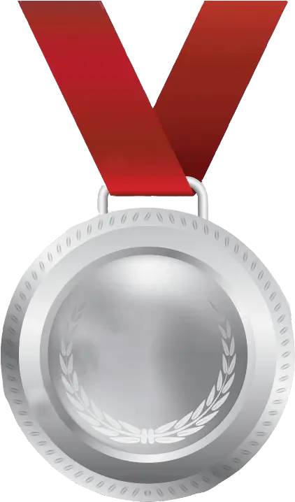
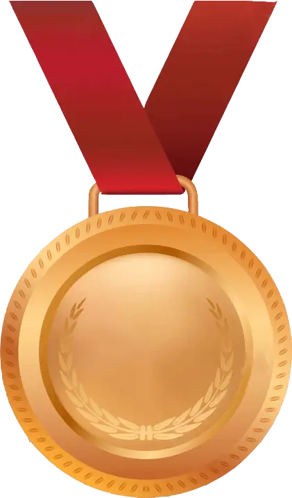
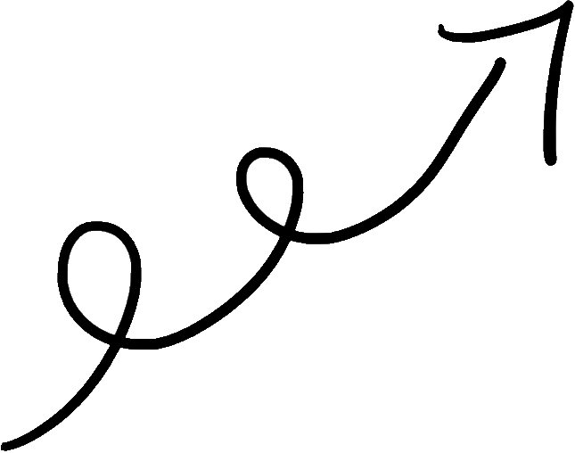
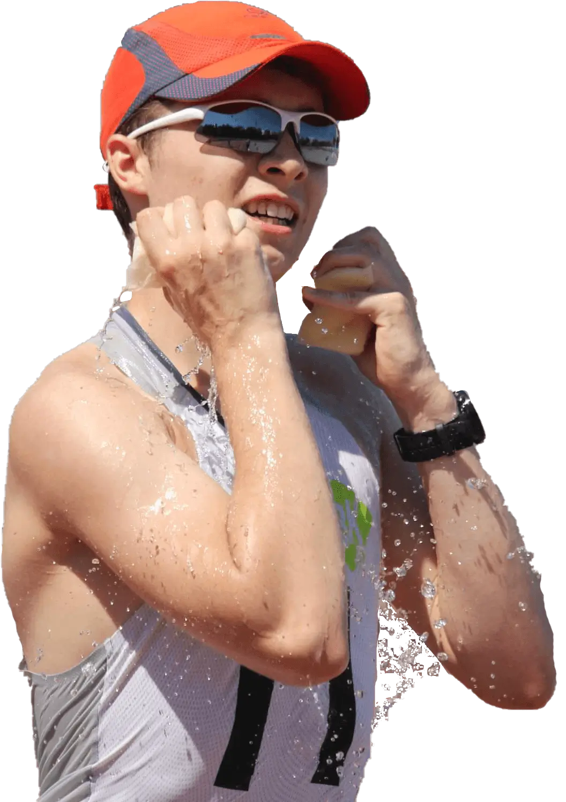
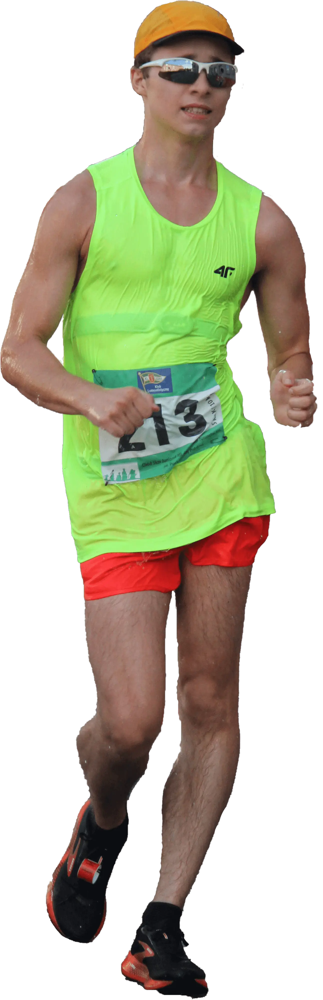
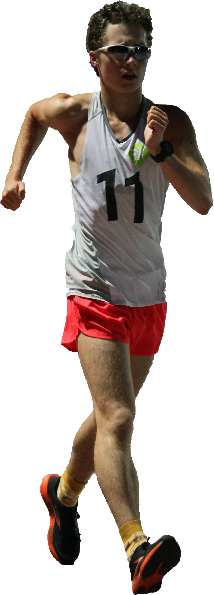

Osiagniecia
|  |  | ||
| Mistrzostwa Polski u16- Karpacz 2021 | Mistrzostwa Polski u16- Slupsk 2020 | Mistrzostwa Polski u18- Bielsko-Biala 2022 | Halowe Mistrzostwa Polski u18- Rzeszów 2022 |
| Mistrzostwa Polski u16- Karpacz 2021 | Mistrzostwa Polski u16- Slupsk 2020 |
| Mistrzostwa Polski u18- Bielsko-Biala 2022 | Halowe Mistrzostwa Polski u18- Rzeszów 2022 |
| Mistrzostwa Polski u16- Karpacz 2021 | |
| Mistrzostwa Polski u16- Slupsk 2020 | |
| Mistrzostwa Polski u18- Bielsko-Biala 2022 | |
| Halowe Mistrzostwa Polski u18- Rzeszów 2022 |
Rekordy i statystyki
| 3 000 m | 14:22.22 |
| 5 000 m | 23:56.34 |
| 10 000 m | 51:10 |
Projekty
Kontakt i wspólpraca
kacper.drobik.kd@gmail.com

mój email


